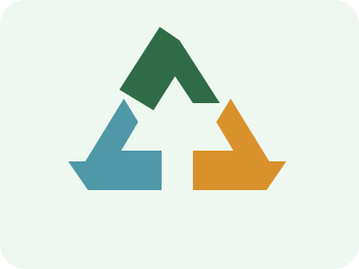

Hulladék és újrahasznosítás
A hulladékhierarchia szerint elsőként a hulladék keletkezését érdemes megelőzni, ezt követi az újrahasználat és az újrahasznosítás.
- Megelőzés: csak azt vegyük meg, amire szükség van.
- Újrahasználat: javítás, csere, adományozás, kulacs és vászontáska.
- Újrahasznosítás: a megfelelő anyagok elkülönített gyűjtése.
- Ártalmatlanítás: csak ha a jobb megoldások nem lehetségesek.

Napi kérdés: Valóban szükségem van erre?